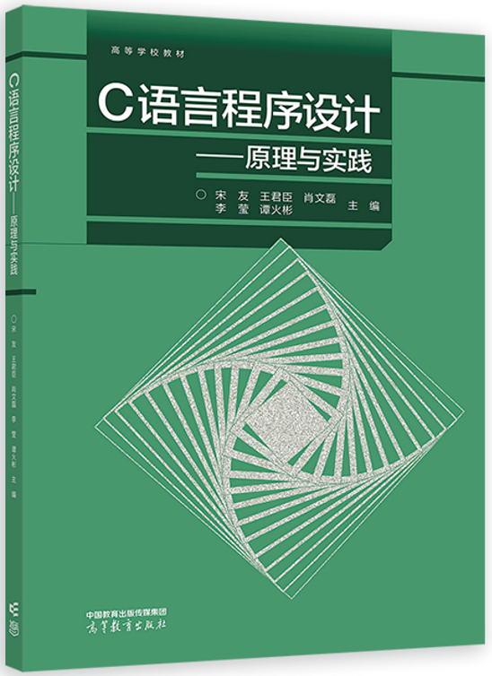
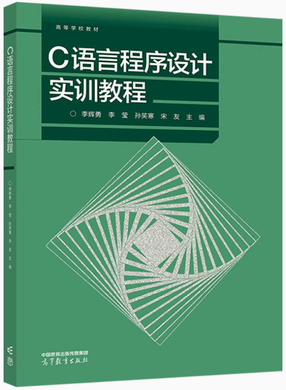

《C 语言程序设计——原理与实践》
好书推荐
课程配套教材与经典参考书。绿皮的《C 语言程序设计》系列是课程指定用书，书后刮刮卡可用于注册本平台账号。
休闲区 · 阅读
教材与参考书
共 4 本《C 语言程序设计实训教程》
《C 程序设计导引》（第 2 版）
《C 程序设计语言》The C Programming Language

《C 语言程序设计——原理与实践》
课程主教材 · 高等教育出版社

《C 语言程序设计实训教程》
上机实训配套 · 高等教育出版社